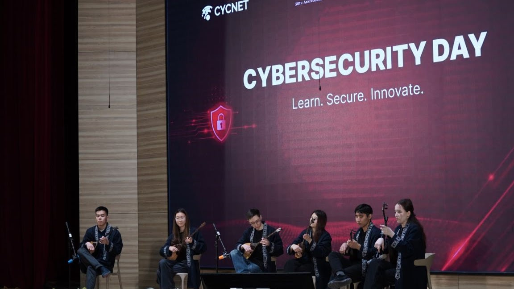

Cybersecurity Day 2026
Cybersecurity Day is a large-scale event at SDU University in collaboration with Fortinet and Cloud24.kz, bringing students, cybersecurity professionals and technology experts together around modern digital infrastructure protection.